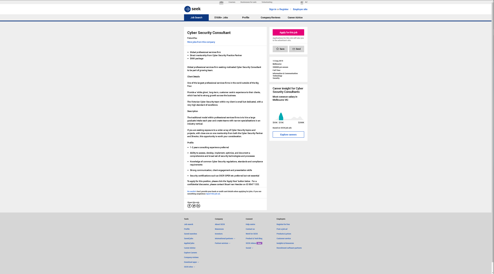

<html>
<head>
<title>Ryan Riddiford's Profile>/title>
</head>

<body>
<h1>Ryan Riddiford's Profile</h1>


<h2> Personal Information

<table style="width:50%">
</tr>
<tr>
<td>Age
<td>20
</tr>
<tr>
<td>Student Number
<td>s3817324
</tr>
<tr>
<td>Email Address
<td>s3817324@student.rmit.edu.au
</tr>
<tr>
<td>Nationality
<td>Australian
</tr>
<tr>
<td>Culture
<td>Western
</tr>
<tr>
<td>Education
<td>Year 11
</tr>
<tr>
<td>Languages
<td>English
</tr>
<tr>
<td>Hobbies
<td>Playing drums, listening to music, video games, and researching about interesting facts/ideas
</tr>
<tr>
<td>Pets
<td>I have two Cavalier King Charles Spaniels named Archie (Blenheim, age 5) and Molly (Tricolour, age 4)
</tr>
</table>


<h2>Interest In Information Technology

<h3>1. What is your interest in IT? When did your interest in IT start? Was there a particular event or person that sparked your interest? Outline your IT experience (if any).


</body>

<p>Information Technology (commonly abbreviated to I.T.) is the means by which most of my interests are a product of, or gives tremendous assistance to. Games, videos and communication are a few of many interests I have that are impacted by it. What primarily influenced me was the growing desire to understand, replicate and draw influence from how IT was used to create and improve many of my interests. I reached an intense level of interest in IT around age 17. This was the case because at around this age I was heavily engaged in many of my IT-related interests. I believe I have an above-average understanding of how to use most IT programs that the general public would use. I have no knowledge worth noting past that level. I have no past participation in IT studies run by education providers. Most that I know about I.T. has come from using computer programs as an end-user.

<h3>2. Why did you choose to come to RMIT? 

<p>I chose to study this subject to put myself on a path towards being in a career I would be comfortable and productive in. When I realised that my current job is not where I want to be in the long-term, and that my current education would make it challenging to do anything about it, I decided to study something that would result in a career more suitable for me. Secondly, online study was the only option I had available for this course because of my current education. Even if I had the option, I would likely still choose online because the convenience and flexibility it brings are incredibly helpful. As for why I chose RMIT specifically, I knew it as a reputable University that people I know have said is a great choice for this field of study. So when I was offered enrolment after applying, it was an easy offer to accept.

<h3>3. What do you expect to learn during your studies?

<p>I expect to learn fundamental I.T.-related skills that directly relate to the outlined topics within the Bachelor of I.T. During this course I hope to also learn other useful skills that are not specific to I.T. Universal skills such as time management, organisation and planning could improve by structuring days efficiently around study and meeting deadlines (without leaving things to the last minute). Work-coordination, assertiveness, communication and other skills could also see improvement from participating in group tasks. Going into this course with the little research I’ve done into the different fields of I.T. Cyber security and software development stand out the most as a future career. From what I can tell, both fields focus on logic, as well as often a strong reliance on fixed procedures. Following systems and logical thought are both attributes I excel at. Nearing the end of these studies, I expect to have made up my mind on which specific area of the IT field I want to pursue a career in.

  

<h2>Ideal Job: Cyber Security Manager

  

<a href="https://www.seek.com.au/job/39695700?type=standard&searchrequesttoken=f540f4e7-5307-43f5-aa5b-07138e23e863">Link to the job advertisement</a>

<h3>Description of the position and why I find it appealing:

<p>A Cyber Security Consultant position is being advertised by an unidentified professional services firm. Cyber Security Consultants assess computer hardware and software for vulnerabilities. When vulnerabilities are discovered, they implement solutions that remove the vulnerabilities. The employer promises to provide a future employee exposure to a broader range of Cyber Security topics and projects, rather than following the tradition of placing the employee into a narrowly focused area.  The employee will also be assisted with these topics and projects by a one on one mentorship from both the Cyber Security Partner and Director.

<p>The position is appealing to me in a few ways. Being a full time position, it helps maintain financial stability long term. The field of IT that is primarily focused in the advertised position is very suitable as it incorporates a number of my strongest attributes. The average salary in Melbourne for this job is decent. Lastly, the range of work being offered is something I find very enticing due to the varying knowledge and experience I would attain in the industry.

<p>Lastly, the employers looking for someone who has strong communication, client engagement and presentation skills. Although I have interpersonal skills such as these, I am sure they need to be refined to meet the expectations of the employer.

<h3>Description of the skills, qualifications and experience required for the position:

<p>The employer has listed three skills that applicants must require for this advertised position. The first mentioned is that applicants must know how to “assess, develop, implement, optimise, and document a comprehensive and broad set of security technologies and processes”. What this means is that applicants need to know about how to make use of Information Security Management Systems (ISMS) for increased effectiveness of Cyber Security in the workplace.

<p>The second skill required is “knowledge of common Cyber Security regulations, standards and compliance requirements”. They want applicants to already know about the threats posed to the online security of individuals and organisations and how they can prevent or fix breaches in computer systems. Organisations are forced to comply with these Cyber Security directives by the government. 

<p>The last skill they require is “strong communication, client engagement and presentation skills”. As this job involves interacting with clients, interpersonal skills are important and need to be strong. They would prefer if applicants had at least 1-2 years prior consulting experience and any security certifications (e.g. OSCP, GPEN).

<h3>Description of the skills, qualifications and experience I currently have:

<p>Although I neither have any of the skills, qualifications nor experience the employer highlights as required or preferential for the advertised position, I do have work-related skills that may prove useful that they have not mentioned. One skill I have is being able to focus intensely on any task for extended periods of time. My ability to focus intensely would also benefit my quality of work. Critical thinking is another skill I excel at, and that should also prove useful in Cyber Security. I often look at all information and assess all possibilities severity and likelihood to form a decision or conclusion.

<h3>Plan to obtain the skills, qualifications and experience required for the position:

<p>The following plan has no defined order because there is no visible benefit for which one is done when (although completing a Bachelor of IT and/or a Bachelor of Cyber Security should be one of the first steps):
- Complete Bachelor of Information Technology within three to six years (depending on full time or part time workload) 
- Complete a Bachelor of Cyber Security (After completing Bachelor of IT or leave Bachelor of IT for this course)
- Acquire a IAPSC membership (International Association of Professional Security Consultants)
-  Possibly acquire other certifications such as:
*	GIAC (Security Certifications)
*	OSCP (Offensive Security Certified Professional)
*	CSC (Certified Security Consultant)
*	CPP (Certified Protection Professional)
*	PSP (Physical Security Professional)
*	CISSP (Certified Information Systems Security Professional)
- Develop communication/presentation skills through researching tips and finding opportunities to practise in front of people (my soft skills that I lack).
- Develop any Cyber Security-specific skills necessary for this job that I haven’t learnt in my studies.
- Send out applications to places that offer work experience as a Cyber Security Consultant to gain the necessary 1-2 years work experience
- Make sure I’m prepared for the interview process (appearance, conversations, questions etc...

<h2>Personal Profile

<h3>What do the results of these tests mean for you?

<p>The combined result of these three tests I took summarise many of my personal traits. Below are some highlights of major aspects of the results.

<p>Out of my top three personality type matches my Myers-Briggs Type Indicator test concluded with, I believe INTP (The Architect) is the closest representation of my Myers-Briggs personality test. People of this type are preoccupied with thoughts on how things work, what their purpose is, the structure of systems and tradition and how things could be improved. I resonate strongly with these thoughts.

<p>The Big Five personality test results shows that I have a tendency towards abstract thinking, introversion and neuroticism. The results for the “Conscientiousness” category shows a lack of self-discipline. The “Agreeableness” category shows little preference for putting my needs above others or vice versa. 

<p>The Learning Style test results concluded that I am primarily an Auditory learner, as opposed to a Visual or Tactile learner. This means that, for example, if I were to be read a story by a teacher, I would learn it easier than if I had to either read it to myself in my head, view visual depictions of the story or act out the story (by myself or as a group).


</body>
</html>
